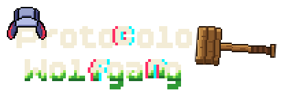
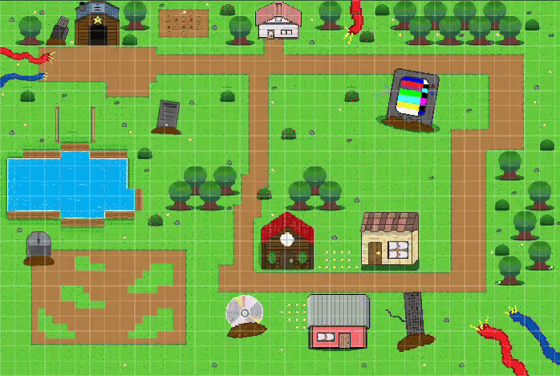
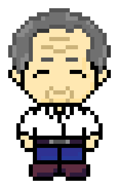
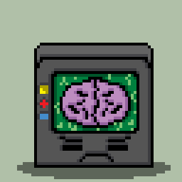
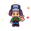
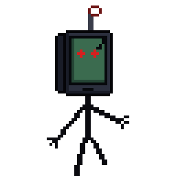
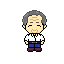
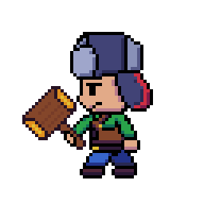

Tudo começou no papel
Antes de começar de fato a programar nosso jogo, sentamos e discutimos o rumo que o jogo ia tomar. Após isso, começamos a botar nossas ideias no papel.



Você assume o papel de John Wolfgang, um jovem carpinteiro que vive em um mundo natural e simples. Após acordar em um ambiente prejudicado por números binários e estruturas futuristas, John embarca em uma jornada para entender a origem dessa transformação. Com a ajuda de Fairy, uma máquina falante construída por ele, John descobre segredos profundos sobre sua própria existência e o propósito do mundo onde vive.
Protocolo Wolfgang começou apenas como uma ideia, mas aos poucos fomos colocando ela em prática, venha ver como foi:
Antes de começar de fato a programar nosso jogo, sentamos e discutimos o rumo que o jogo ia tomar. Após isso, começamos a botar nossas ideias no papel.
Com os primeiros conceitos definidos, precisávamos começar a dar vida aos nossos personagens. Era hora de criar quem ia nos acompanhar nessa aventura. Cada personagem foi desenhando pensando no mínimos detalhes, cada um com sua identidade própria.
Depois dos personagens, tinhamos que criar o cenário. Ele foi construído de forma a passar a sensação de que o player está em um mundo bugado, diferente e errado.

Por fim, passamos os personagens do papel para o computador. Cada personagem foi desenvolvido com pixel art tendo suas próprias animações.





Um jovem carpinteiro que acorda em um mundo corrompido por tecnologia e números binários, buscando entender o que aconteceu.

Uma máquina falante construída por John que o acompanha na jornada e o ajuda a descobrir os segredos daquele mundo.

Um enorme aparelho esquelético, bem assustador, esconde algum tipo de segredo.

Uma imensa máquina assustadora, aparenta ter cérebro humano.

Uma pequena máquina a primeira vista simpática, porém continua sendo um mistério.

O velho ancião da vila, infelizmente está desaparecido.
Jogabilidade
Estilo: Top-Down
Progressão: Colete componentes de hardware para melhorar o inventário e desbloquear habilidades especiais. (siga a historia completando os objetivos e passando pelas dungeons)
Combate: Use armas de curto e longo alcance, além de habilidades obtidas ao derrotar chefes.(combate usando a marreta de john e melhore suas estatisticas usando itens encontrados pelo mapa)
Dungeons Educativas: Fases inspiradas nas disciplinas do curso técnico, onde cada chefe representa uma matéria. Derrote-os para resgatar professores que fornecem dicas para avançar.
Desafios: Cada Dungeon possui mecânicas únicas. Na fase de Lógica de Programação, por exemplo, o jogo muda para plataforma e você precisa corrigir erros de sintaxe em algoritmos dentro de um tempo limite.(cada dungeon possui mecanicas unicas, envolvendo desafios envolvendo as materias do curso tecnico. Em uma dungeon etmos q converter decimal para binario)

Vídeo da gameplay
O vídeo não carregou? Abra direto no Google Drive.


Aqui estão os documentos e o código-fonte do projeto.
Projeto desenvolvido por alunos do curso Técnico em Desenvolvimento de Sistemas do IFSP.

Web Designer

Documentalista

Líder e Programador

Artista

Programador